Secret and Optional NPC Dialogue
| Optional Conversation # 14
Disc: 3 Location: Village of Zoah
(Liberal District) Aldo's house Characters: Aldo and Abner Criteria: Right at the start of Disc 3 go straight
to Zoah and back in front of Aldo's house. If you go to the campsite
and talk to Paet you won't be able to hear this optional conversation.You'll
find Aldo and Abner still sitting here. They have one new thing to say
from afar. |
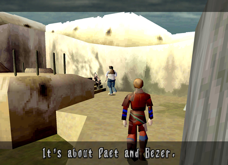 1. They have one new conversation for you to hear. |
| Optional Conversation # 15
Disc: 3 Location: Village of Zoah
(Liberal District) Inside Aldo's house Characters: Aldo and Edge Criteria: Go to your campsite and talk to Paet.
Next, go to the Excavation Site. Get the Large Gun X1 from Radgam. Now,
go back to Zoah. Before you sell the gun go inside Aldo's house, found
in the far back across from Paet's workstation. Once you enter the house
you have to enter another opening found in the back. This leads to a
back room where you'll find Aldo. Talk to him twice to start the optional
dialogue. Then examine the crate of bottles on the floor to get a Dual
Blast Chip X1. After getting this item talk to Aldo again to start the
second half of the optional dialogue. Answering yes and no will change
the conversation slightly. For instance: if you answer no, Aldo will
kick you out of his house. Once outside, you can go back in to talk
to him again. |
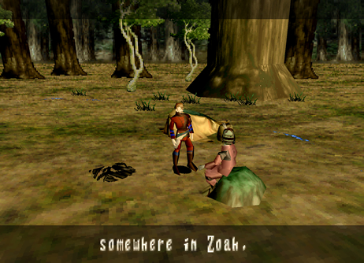 1. First, talk to Paet at camp. This triggers Radgam to appear at the Excavation Site. |
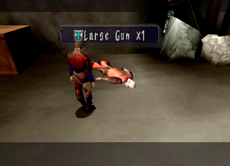 2. Examine Radgam to receive Large Gun X1. Go to Zoah next but don't sell the gun. He doesn't look too good does he... |
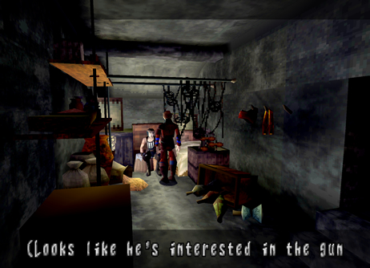 3. Go inside Aldo's house to find him in the back. Show him the Gun. |
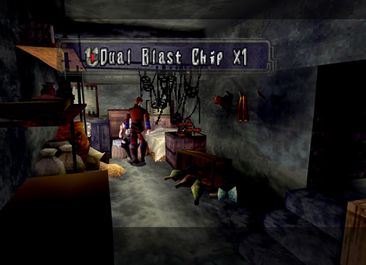 4. Examining the crate on the floor will give you an item. This opens up the next part of the optional conversation. |
| Optional Conversation # 16
Disc: 3 Location: Village of Zoah (Holy District)
Characters: Edna and Quitor's Wife Criteria: Go to the Holy District for the first
time. Once inside, you will see two women sitting outside. Talk to them
from afar to hear 3 different conversations. |
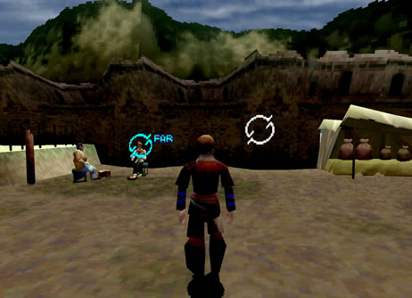 1. Examine one of the two women just outside the entrance to the Holy District. |
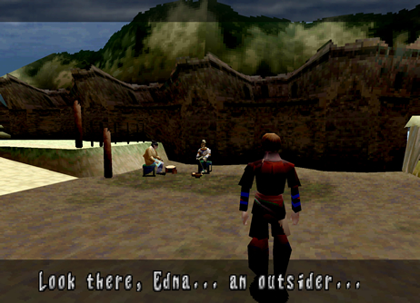 2. They don't like outsiders much! |
| Optional Conversation # 17
Disc: 3 Location: Village of Zoah (Liberal
District) Paet's workstation Characters: Paet and Bezer Criteria: After talking to Viaman for the first
time and returning from the Holy District back to the Liberal District,
go back to Paet's workstation to find him and Bezer working on the small
airship. Talk to them from afar to hear 2 different conversations. |
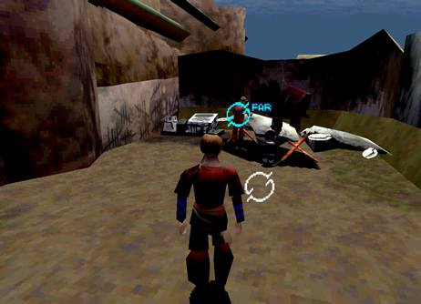 1. Examine Paet or Bezer from afar to hear their conversation. |
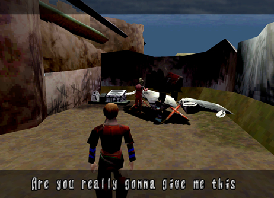 2. They're working overtime on the airship! |
| Optional Conversation # 18
Disc: 3 Location: Village of Zoah (Holy District)
Characters: Edna and Quitor's Wife Criteria: After defeating the Deathmaker boss and
returning from the Imperial Air Force Post, go to the Holy District.
Once inside, talk to Edna and Quitor's Wife again. One new dialogue
option from afar is available. |
1. Examine Edna or Quitor's wife a new conversation from afar. |
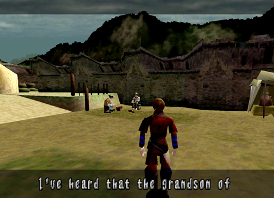 2. They're complaining about Bezer. |
| Optional Conversation # 19
Disc: 3 Location: Village of Zoah (Liberal
District) Paet's workstation Characters: Paet and Bezer Criteria: After talking to Viaman and Damon the
High Priest at the church in the Holy District, go back to the Liberal
District and over to Paet's workstation. You will find him along with
Bezer. Talk to them from afar for 3 optional conversations. |
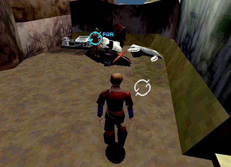 1. Talk to Paet and Bezer after coming back from the Holy District. |
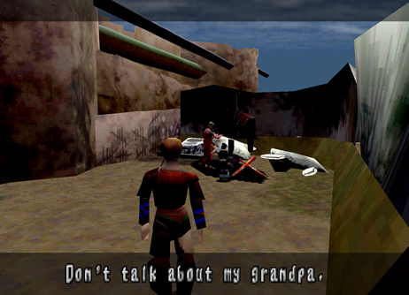 2. Both of them have some pretty bad anger issues! |
| Optional Conversation # 20 (Missable after Mel-Kava) Disc: 3 Location: Village of Zoah (Holy District)
Characters: Edna and Quitor's Wife Criteria: After meeting Craymen at night in Zoah
and before you go to Mel-Kava, go back to the Holy District and talk
to Edna and Quitor's Wife. Two new dialogue options from afar will be
available. |
1. Examine Edna or Quitor's wife for 2 new conversations from afar. |
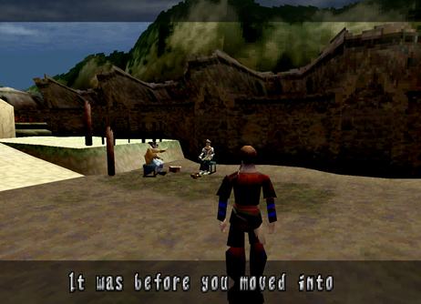 2. You will find out why they don't like outsiders. |
| Optional Conversation # 21 (Missable after Mel-Kava) Disc: 3 Location: Village of Zoah
(Holy District) Behind the Church Characters: Damon the
High Priest Criteria: After meeting Craymen at night in Zoah
and before you go Mel-Kava, go back to the Holy District and go behind
the chruch. You will find a giant monument there with Damon standing
in front of it. Examine him from afar to listen in on his conversation. |
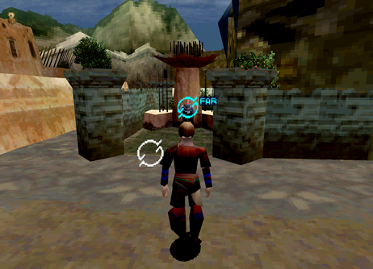 1. Examine Damon to eavesdrop on his personal reflection. |
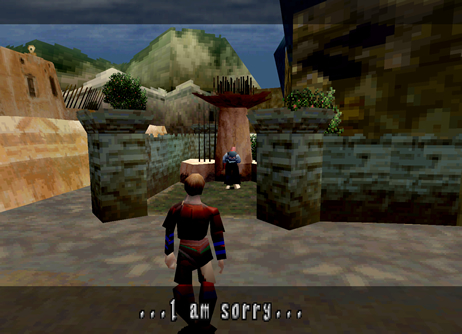 2. Just like Edna and Quitor's wife, you will find out why they don't like outsiders. |